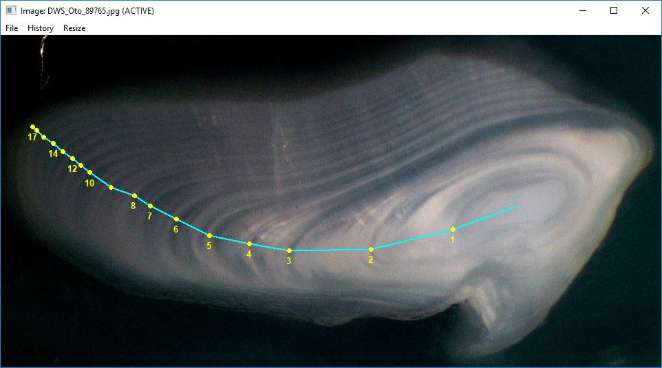
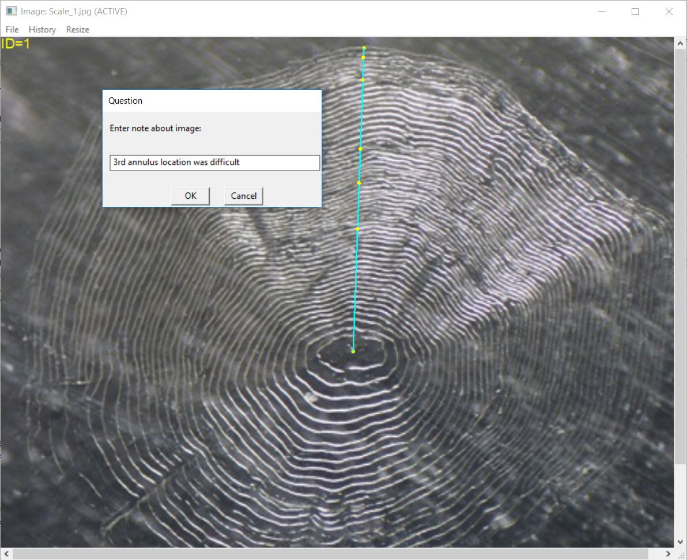

Some researchers would like to use RFishBC to collect age data only
without any concern for measurements on the image for the purposes of
back-calculation. RFishBC will record measurements on the structure but
these measurements can ultimately be ignored if you simply want to have
a data.frame of estimated ages. This is demonstrated below using a few
functions from the dplyr package.
This example also uses the “DHO” readings of “Scale_1.jpg”,
“Scale_2.jpg”, and “Scale_3.jpg” demonstrated in the Combine Data from
Multiple Structures section of the Collecting Radial Measurements
vignette. These readings are put into a list using
listFiles() and their data are combined into a
WIDE format data.frame below (as described in the Collecting Radial
Measurements vignette).
( fns <- listFiles("rds",other=c("Scale","DHO")) )
#> [1] "Scale_1_DHO.rds" "Scale_2_DHO.rds" "Scale_3_DHO.rds"
( dfrad2 <- combineData(fns,formatOut="wide") )
#> id reading agecap radcap rad1 rad2 rad3 rad4 rad5
#> 1 1 DHO 5 0.5163737 0.2208691 0.2893299 0.3259383 0.4626601 0.5017862
#> 2 2 DHO 4 0.3908662 0.1377625 0.2236611 0.3026716 0.3530492 NA
#> 3 3 DHO 1 0.5202232 0.5202232 NA NA NA NAA data.frame of just ages is created from this data.frame by removing
all variables that contain the word “rad” using select()
from dplyr. The select() function requires the
original data.frame as its first argument and then directions on
variables to select as the ensuing arguments. There are several ways to
get the required data.frame with these simple data as shown below – one
can select variables individually, select contiguous variables, or
deselect (negative sign) variables that contain the word “rad”.
( dfrad2ages <- select(dfrad2,id,reading,agecap) )
#> id reading agecap
#> 1 1 DHO 5
#> 2 2 DHO 4
#> 3 3 DHO 1
( dfrad2ages <- select(dfrad2,id:agecap) )
#> id reading agecap
#> 1 1 DHO 5
#> 2 2 DHO 4
#> 3 3 DHO 1
( dfrad2ages <- select(dfrad2,-contains("rad")) )
#> id reading agecap
#> 1 1 DHO 5
#> 2 2 DHO 4
#> 3 3 DHO 1The agecap variable can be renamed with
rename() from dplyr.
( dfrad2ages <- rename(dfrad2ages,age=agecap) )
#> id reading age
#> 1 1 DHO 5
#> 2 2 DHO 4
#> 3 3 DHO 1
Some structures, especially otoliths, often have “growth
trajectories” on which the user wants to mark annuli that are nonlinear.
In these instances, the use of a linear transect is inappropriate.
RFishBC can handle such circumstances by using
makeTransect=FALSE in digitizeRadii(). When
using makeTransect=FALSE the user will not select a
transect as shown in the Collecting
Radial Measurements vignette. The user will instead be prompted to
successively mark the structure center, annuli, and structure
margin.
digitizeRadii("DWS_Oto_89765.jpg",id=89765,reading="DHO",edgeIsAnnulus=TRUE,
makeTransect=FALSE,windowSize=10)The results can be seen with showDigitizedImage() as
described in the Visualize Radial Data
vignette.
showDigitizedImage("DWS_Oto_89765_DHO.rds",
annuliLabels=c(1:8,10,12,14,17),cex.ann=0.8)
RFishBC calculates radii as the cumulative sum of the annular increments rather than the distance from the structure center to the annuli. These radii or increments can be extracted as described in the Collecting Radial Measurements vignette.
combineData("DWS_Oto_89765_DHO.rds",formatOut="wide")
#> id reading agecap radcap rad1 rad2 rad3 rad4
#> 1 89765 DHO 19 1.52889 0.1609664 0.4130613 0.6681783 0.7902489
#> rad5 rad6 rad7 rad8 rad9 rad10 rad11 rad12
#> 1 0.9018444 0.9340365 1.014203 1.099765 1.159114 1.229457 1.258141 1.298337
#> rad13 rad14 rad15 rad16 rad17 rad18 rad19
#> 1 1.344228 1.372911 1.411179 1.442248 1.477615 1.511827 1.52889
combineData("DWS_Oto_89765_DHO.rds",formatOut="wide",typeOut="inc")
#> id reading agecap radcap inc1 inc2 inc3 inc4 inc5
#> 1 89765 DHO 19 1.52889 0.1609664 0.2520949 0.255117 0.1220706 0.1115955
#> inc6 inc7 inc8 inc9 inc10 inc11 inc12
#> 1 0.03219214 0.08016677 0.08556216 0.05934844 0.07034342 0.02868355 0.04019624
#> inc13 inc14 inc15 inc16 inc17 inc18 inc19
#> 1 0.04589046 0.02868355 0.03826742 0.0310698 0.03536676 0.03421178 0.01706312
As noted in the Introduction to
Back-calculation vignette, radial measurements are the distance from
the structure center to the annulus.1 In some instances, the user may desire
incremental rather than radial measurements. Incremental measurements
are the distances between successive annuli, with the first increment
being the distance from the structure center to the first annulus.
Increments may be extracted from the data stored in the R data file with
combineData() using typeOut="inc". For
example, the radial and incremental measurements for the “DHO” reading
of “Scale_1.jpg” in wide format are shown below.
combineData("Scale_1_DHO.rds",formatOut="wide")
#> id reading agecap radcap rad1 rad2 rad3 rad4 rad5
#> 1 1 DHO 5 0.5163737 0.2208691 0.2893299 0.3259383 0.4626601 0.5017862
combineData("Scale_1_DHO.rds",typeOut="inc",formatOut="wide")
#> id reading agecap radcap inc1 inc2 inc3 inc4
#> 1 1 DHO 5 0.5163737 0.2208691 0.06846078 0.03660836 0.1367218
#> inc5
#> 1 0.03912615Of course, increments from several sets of measurements may also be
extracted (note that the list of R data files in fns was
created above)
combineData(fns,formatOut="wide")
#> id reading agecap radcap rad1 rad2 rad3 rad4 rad5
#> 1 1 DHO 5 0.5163737 0.2208691 0.2893299 0.3259383 0.4626601 0.5017862
#> 2 2 DHO 4 0.3908662 0.1377625 0.2236611 0.3026716 0.3530492 NA
#> 3 3 DHO 1 0.5202232 0.5202232 NA NA NA NA
combineData(fns,typeOut="inc",formatOut="wide")
#> id reading agecap radcap inc1 inc2 inc3 inc4
#> 1 1 DHO 5 0.5163737 0.2208691 0.06846078 0.03660836 0.13672182
#> 2 2 DHO 4 0.3908662 0.1377625 0.08589861 0.07901049 0.05037762
#> 3 3 DHO 1 0.5202232 0.5202232 NA NA NA
#> inc5
#> 1 0.03912615
#> 2 NA
#> 3 NA
A user may want to include a “flagging note” for a particular reading
in the corresponding R Data file. These notes may be used, for example,
to indicate that the reading was particularly difficult, needs to be
reviewed, or needs to be re-read. As of version 0.2.1, notes may be
added to the note object in the R Data files in two
ways.
First, a note may be added to an already saved R Data file with
addNote(). If no arguments are included in this function
then the user will be prompted to choose the existing R Data file and
then to enter the note. If the R Data file previously had a note then
that note will be over-written with the new note. The user may also
supply the name of the R Data file as the first argument and the note as
the second argument to addNote(). For example, the
following code would add a simple note to the “Scale_1_DHO.rds”
file.
addNote("Scale_1_DHO.rds","3rd annulus location was difficult")Second, a note may be added before the R Data file is written by
including addNote=TRUE to digitizeRadii(). The
note may be provided before processing the image by including the note
in note= in digitizeRadii(). However, the user
is more likely to not have a note about the reading of the image until
after the image has been read. If no note is given in note=
(the default behavior) then the user will be prompted to enter a note
after the image has been read but before the R Data file is written.
This option may be set for the session with RFBCoptions()
(as demonstrated in the Collecting
Radial Measurements vignette). For example, the following code would
result in the dialog box shown below.
RFBCoptions(reading="DHO",edgeIsAnnulus=FALSE,windowSize=10,addNote=TRUE)
digitizeRadii("Scale_1.jpg",id="1")
The notes for a list of R Data file names may be found with
findNotes(). The first argument to this function can be a
vector of R Data file names in the current working directory. If this
argument is missing, then the user will be prompted to choose R Data
files from a dialog box. For example, the following code returns the
list of notes for all fish ids and readings in the current working
directory (note that the second file listed is not a valid file, so it
was excluded from the vector given to findNotes()).
( tmp <- listFiles(".rds") )
#> [1] "DWS_Oto_89765_DHO.rds" "Oto140306_DHO.rds" "Oto140306_OHD.rds"
#> [4] "Scale_1_DHO.rds" "Scale_1_ODH.rds" "Scale_1_OHD.rds"
#> [7] "Scale_2_DHO.rds" "Scale_2_OLDwNoNote.rds" "Scale_3_DHO.rds"
findNotes(tmp[-2])
#> id reading note
#> 1 89765 DHO
#> 2 140306 OHD
#> 3 1 DHO 3rd annulus location was difficult
#> 4 1 ODH Test note as argument
#> 5 1 OHD Test not as dialog box
#> 6 2 DHO
#> 7 2 DHO
#> 8 3 DHOThe results from findNotes() is a vector that can be
manipulated. For example, the following shows the list for only those
ids and readings for which a note was made.
notes <- findNotes(tmp[-2])
dplyr::filter(notes,note!="")
#> id reading note
#> 1 1 DHO 3rd annulus location was difficult
#> 2 1 ODH Test note as argument
#> 3 1 OHD Test not as dialog boxAdditionally, one can append the notes to the radial (or incremental)
measurements returned from combineData() (e.g., as shown above) using
left_join() from dplyr as shown below.
( fns <- listFiles("rds",other=c("Scale","DHO")) )
#> [1] "Scale_1_DHO.rds" "Scale_2_DHO.rds" "Scale_3_DHO.rds"
( dfrad2 <- combineData(fns,formatOut="wide") )
#> id reading agecap radcap rad1 rad2 rad3 rad4 rad5
#> 1 1 DHO 5 0.5163737 0.2208691 0.2893299 0.3259383 0.4626601 0.5017862
#> 2 2 DHO 4 0.3908662 0.1377625 0.2236611 0.3026716 0.3530492 NA
#> 3 3 DHO 1 0.5202232 0.5202232 NA NA NA NA
dplyr::left_join(dfrad2,notes,by=c("id","reading"))
#> id reading agecap radcap rad1 rad2 rad3 rad4 rad5
#> 1 1 DHO 5 0.5163737 0.2208691 0.2893299 0.3259383 0.4626601 0.5017862
#> 2 2 DHO 4 0.3908662 0.1377625 0.2236611 0.3026716 0.3530492 NA
#> 3 2 DHO 4 0.3908662 0.1377625 0.2236611 0.3026716 0.3530492 NA
#> 4 3 DHO 1 0.5202232 0.5202232 NA NA NA NA
#> note
#> 1 3rd annulus location was difficult
#> 2
#> 3
#> 4
Note that with curved growth trajectories, radial measurements are the cumulative sum of the distances between annuli with the first distance being from the structure center to the first annulus.↩︎